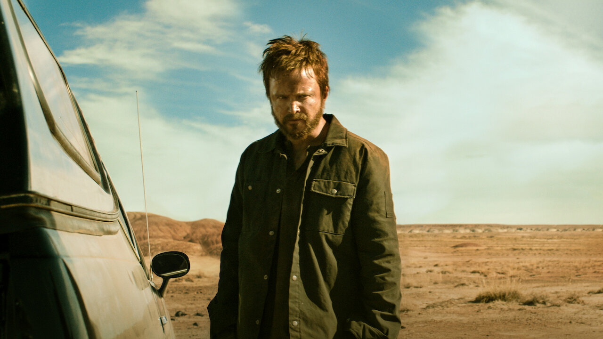

El universo "Breaking Bad" es un conjunto de historias relacionadas con la exitosa serie
de televisión "Breaking Bad" y su spin-off "Better Call Saul". La serie original sigue la vida de Walter White,
un
profesor de química de secundaria que se entera de que tiene cáncer y, en un intento desesperado por asegurar el
futuro de su familia, comienza a fabricar metanfetamina junto a su exalumno Jesse Pinkman.
Breaking Bad - El inicio de todo
La serie sigue la transformación de Walter de un hombre común y corriente a un
narcotraficante peligroso y la lucha de Jesse por encontrar su lugar en el mundo criminal. La serie también
presenta
personajes como Hank Schrader, el cuñado de Walter y agente de la DEA, y Gus Fring, un prominente
narcotraficante
y
dueño de una cadena de restaurantes de comida rápida.
Better Call Saul - ¿Mejor que la serie original?
"Better Call Saul" es un spin-off que sigue la vida del abogado criminalista Saul
Goodman
antes de que se convirtiera en el abogado de Walter White en "Breaking Bad". La serie explora la evolución de
Saul,
desde su pasado como James McGill, un abogado con dificultades financieras, hasta su transformación en el
abogado
astuto y corrupto que conocimos en la serie original.
El Camino - Primera y única película del Universo

En la película "El Camino: A Breaking Bad Movie", se sigue la historia de Jesse después
de
los eventos de la serie original. La película muestra su lucha por escapar de su pasado y encontrar una manera
de
construir un futuro para sí mismo.
Cronología del Universo
El universo "Breaking Bad" es un conjunto de historias relacionadas con la exitosa serie
de televisión "Breaking Bad" y su spin-off "Better Call Saul". La serie original sigue la vida de Walter White,
un
profesor de química de secundaria que se entera de que tiene cáncer y, en un intento desesperado por asegurar el
futuro de su familia, comienza a fabricar metanfetamina junto a su exalumno Jesse Pinkman.
Personajes principales
Walter White
Walter White es un profesor de química de secundaria que se entera de que tiene cáncer y,
en un intento
desesperado por asegurar el futuro de su familia, comienza a fabricar metanfetamina junto a su exalumno
Jesse
Pinkman.
Curiosidades
El personaje de Walter White fue interpretado por Bryan Cranston.
Bryan Cranston fue nominado a un Emmy por su papel de Walter White.
Bryan afirmó que el personaje de Walter White fue inspirado por su padre, quien también era profesor de
química.
Jamie Foxx fue considerado para el papel de Walter White.
Antes de ser elegido para el papel de Walter White, Bryan Cranston fue considerado para el papel de
Jesse
Pinkman.
Jesse Pinkman
Jesse Pinkman es un exalumno de Walter White que se convierte en su socio en la
fabricación de
metanfetamina. Jesse es un joven problemático que se mete en problemas con la ley y tiene problemas para
mantenerse alejado de las drogas.
Curiosidades
El personaje de Jesse Pinkman fue interpretado por Aaron Paul.
Aaron Paul fue considerado uno de los actores más sexys de la televisión.
Actualmente, Aaron Paul está casado.
Saul Goodman
Saul Goodman es un abogado criminalista que se convierte en el abogado de Walter White y
Jesse Pinkman.
Saul
es un abogado astuto y corrupto que utiliza su conocimiento de la ley para ayudar a sus clientes a salir de
problemas.
Curiosidades
Saul Goodman fue interpretado por Bob Odenkirk.
Bob Odenkirk fue nominado pocas veces por su papel de Saul Goodman.
Bob se graduó de la Universidad de Harvard.
Saul tenía pensado morir en la serie original, pero los productores decidieron mantenerlo vivo.
Hank Schrader
Hank Schrader es el cuñado de Walter White y agente de la DEA. Hank es un hombre de
familia que se
preocupa
por su familia y su trabajo. Hank es un agente de la DEA que se preocupa por su familia y su trabajo.
Curiosidades
El personaje de Hank Schrader fue interpretado por Dean Norris.
Dean Norris fue nominado a un Emmy por su papel de Hank Schrader.
La escena en la que Hank Schrader muere fue filmada en un día.
Dean ha afirmado que el personaje de Hank Schrader fue inspirado por su padre, quien también era agente
de la DEA.
Dean Norris fue considerado para el papel de Walter White.
Mike Ehrmantraut
Mike Ehrmantraut es un ex policía de Filadelfia que se convierte en el principal matón de
Gus Fring.
Mike es
un hombre de familia que se preocupa por su familia y su trabajo. Mike es un hombre de familia que se
preocupa
por su familia y su trabajo.
Curiosidades
Es uno de los personajes más queridos por los fans.
El personaje de Mike Ehrmantraut fue interpretado por Jonathan Banks.
Jonathan admite que su personaje es muy diferente a él, pues él no mataría ni a una mosca.
Gustavo Fring
Gustavo Fring es un prominente narcotraficante y dueño de una cadena de restaurantes de
comida rápida.
Gus
es un hombre de negocios astuto que utiliza su conocimiento de la industria de la comida rápida para
construir
un imperio de drogas.
Curiosidades
Gustavo Fring fue interpretado por Giancarlo Esposito.
Este es el papel estelar de Giancarlo Esposito, y ha seguido haciendo papeles de villanos.
Para Giancarlo Esposito, el personaje de Gus Fring es un personaje complejo y fascinante.
Los fans de la serie consideran a Gus Fring como uno de los mejores villanos de la televisión.
Vince Gilligan, creador de la serie, ha dicho que Gus Fring es su personaje favorito.